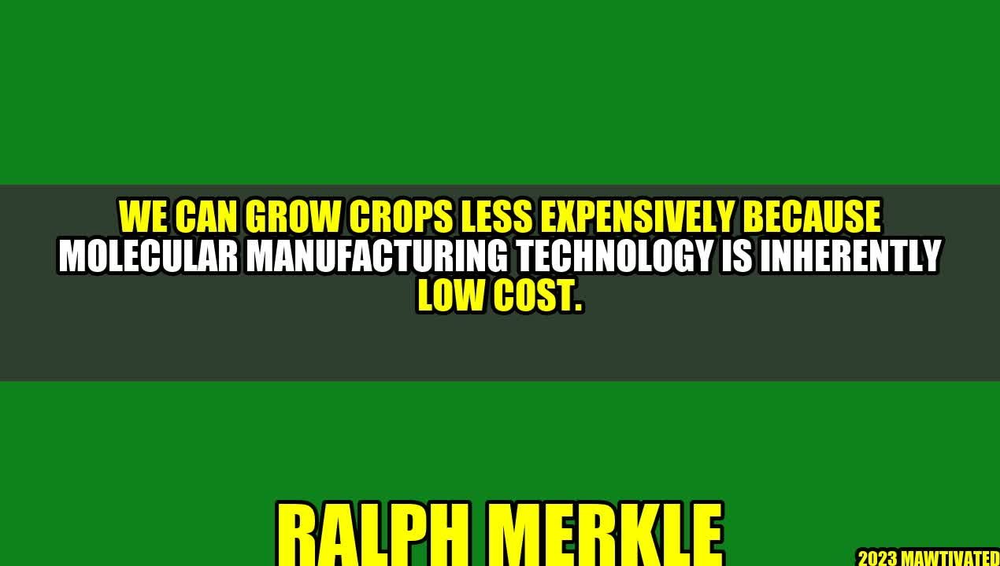

The Low-Cost Agricultural Revolution: How Molecular Manufacturing Technology is Changing the Game

It was a hot summer day in rural India when farmer Ravi Kumar stumbled upon something that would change his life forever. He had been struggling to make ends meet for years, with the cost of seeds, fertilizers, and pesticides eating up most of his profits. But when he was introduced to the wonders of molecular manufacturing technology, everything changed.
With the help of nanoscale machines, Ravi was able to grow his crops at a fraction of the cost. The machines worked tirelessly to deliver the precise amounts of nutrients and water to each plant, ensuring optimal growth and yield. Ravi's fields were now a lush green, teeming with healthy crops that were a sight to behold.
Ravi's story is just one example of the transformative power of molecular manufacturing technology in agriculture. This breakthrough technology has the potential to revolutionize the way we grow crops and feed the world, by making it cheaper, more efficient, and more sustainable.
The Promise of Molecular Manufacturing Technology
Molecular manufacturing technology is a field of nanotechnology that deals with the design and construction of nanoscale machines. These machines are so small that they can manipulate individual molecules and atoms, which gives them incredible precision and control over chemical reactions and physical processes.
One of the most exciting applications of molecular manufacturing technology is in agriculture, where it has the potential to transform the industry from the ground up. Here are just a few of the benefits of this technology:
Lower Cost: We can grow crops less expensively because molecular manufacturing technology is inherently low cost.
Increased Efficiency: Nanoscale machines can precisely control the delivery of water and nutrients to each plant, which results in faster growth and higher yield.
Greater Sustainability: By using molecular manufacturing technology, we can reduce the amount of water and fertilizers needed to grow crops, which means less strain on natural resources.
"Molecular manufacturing technology is the key to unlocking the full potential of agriculture. We can feed the world more sustainably and efficiently than ever before, all thanks to the power of nanoscale machines." - Ralph Merkle, nanotechnology pioneer
The promise of molecular manufacturing technology is not just theoretical - there are already real-world examples of its transformative power. For instance:
In Israel, a startup called Phytech has developed a system that monitors plants' stress levels in real-time, using nanoscale sensors and algorithms to adjust the delivery of water and nutrients accordingly. The system has been shown to increase crop yield by up to 32% while reducing water usage by up to 30%.
In Japan, researchers have used nanoscale machines to create a rice crop that is resistant to pests and drought. The machines deliver a specific RNA molecule to the rice plants, which activates their natural defenses against the pests and allows them to survive without excess water.
In the United States, a company called Indigo Agriculture has developed a microbial coating that can be applied to seeds to give them greater resistance to drought, heat, and other stresses. The coating is created using nanoscale machines that can precisely control the composition and distribution of the microbes.
Conclusion
Molecular manufacturing technology is poised to revolutionize agriculture, by making it cheaper, more efficient, and more sustainable. By utilizing its power, we can feed the world's growing population while minimizing our impact on the environment. Here are three key takeaways from this article:
Molecular manufacturing technology is a field of nanotechnology that deals with the construction of nanoscale machines.
This technology can make agriculture cheaper, more efficient, and more sustainable by precisely controlling the delivery of water and nutrients to plants.
There are already real-world examples of the power of molecular manufacturing technology in agriculture, such as improved crop yield and drought resistance.
Practical Tips:
Stay up-to-date with the latest advancements in molecular manufacturing technology to see how it can apply to your agricultural practices.
Experiment with different ways of delivering water and nutrients to your crops to see which methods work best in your area.
Consider investing in microbial coatings or other nanoscale technologies that can improve your crop yields and make them more resilient to environmental stresses.
Curated by Team Akash.Mittal.Blog
Share on Twitter Share on LinkedIn